Note
Go to the end to download the full example code. or to run this example in your browser via Binder
Sampling densities#
A collection of sampling densities and density-based non-Cartesian trajectories.
In this example we illustrate the use of different sampling densities, and show how to generate trajectories based on them, such as random walks and travelling-salesman trajectories.
# External
import brainweb_dl as bwdl
import matplotlib.pyplot as plt
import numpy as np
from utils import (
show_density,
show_densities,
show_locations,
show_trajectory,
show_trajectories,
)
# Internal
import mrinufft as mn
from mrinufft import display_2D_trajectory, display_3D_trajectory
Script options#
These options are used in the examples below as default values for all densities and trajectories.
# Density parameters
shape_2d = (100, 100)
shape_3d = (100, 100, 100)
# Trajectory parameters
Nc = 10 # Number of shots
Ns = 50 # Number of samples per shot
# Display parameters
figure_size = 5.5 # Figure size for trajectory plots
subfigure_size = 3 # Figure size for subplots
one_shot = 0 # Highlight one shot in particular
Densities#
In this section we present different sampling densities with various properties.
Cutoff/decay density#
Create a density composed of a central constant-value ellipsis defined by a cutoff ratio, followed by a polynomial decay over outer regions as defined in [Cha+22].
cutoff_density = mn.create_cutoff_decay_density(shape=shape_2d, cutoff=0.2, decay=2)
show_density(cutoff_density, figure_size=figure_size)
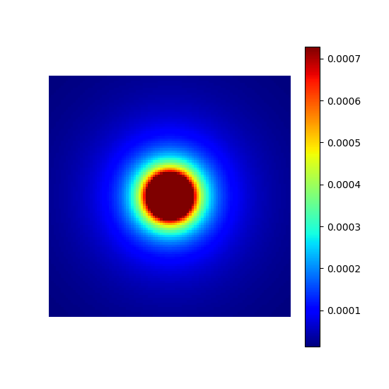
cutoff (float)#
The k-space radius cutoff ratio between 0 and 1 within
which density remains uniform and beyond which it decays.
It is modulated by resolution to create ellipsoids.
The mrinufft.create_polynomial_density
simply calls this function with cutoff=0.
arguments = [0, 0.1, 0.2, 0.3]
function = lambda x: mn.create_cutoff_decay_density(
shape=shape_2d,
cutoff=x,
decay=2,
)
show_densities(
function,
arguments,
subfig_size=subfigure_size,
)
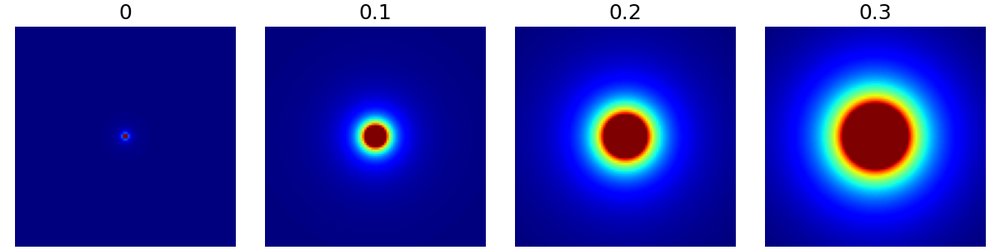
decay (float)#
The polynomial decay in density beyond the cutoff ratio. It can be zero or negative as shown below, but most applications are expected have decays in the positive range.
arguments = [-1, 0, 0.5, 2]
function = lambda x: mn.create_cutoff_decay_density(
shape=shape_2d,
cutoff=0.2,
decay=x,
)
show_densities(
function,
arguments,
subfig_size=subfigure_size,
)
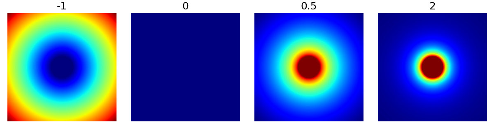
resolution (tuple)#
Resolution scaling factors for each dimension of the density grid,
by default None. Note on the example below that the unit doesn’t
matter because cutoff is a ratio and decay is an exponent,
so only the relative factor between the dimensions is important.
This argument can be used to handle anisotropy but also to produce ellipsoidal densities.
arguments = [None, (1, 1), (1, 2), (1e-3, 0.5e-3)]
function = lambda x: mn.create_cutoff_decay_density(
shape=shape_2d,
cutoff=0.2,
decay=2,
resolution=x,
)
show_densities(
function,
arguments,
subfig_size=subfigure_size,
)
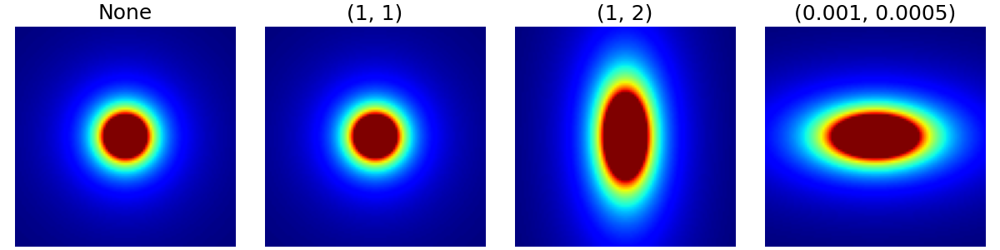
Energy-based density#
A common intuition is to consider that the sampling density should be proportional to the k-space amplitude. It can be learned from existing datasets and used for new acquisitions.
dataset = bwdl.get_mri(4, "T1")[:, ::2, ::2]
energy_density = mn.create_energy_density(dataset=dataset)
show_density(energy_density, figure_size=figure_size, log_scale=True)
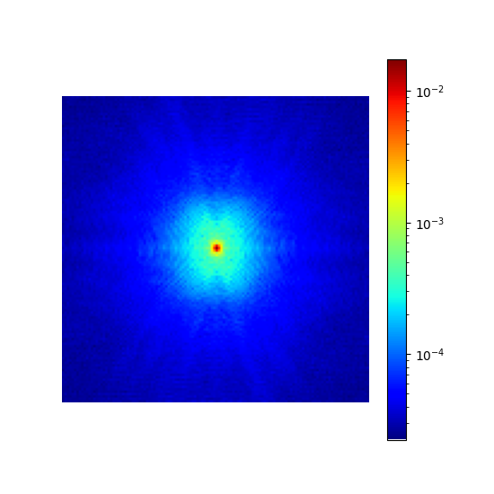
dataset (np.ndarray)#
The dataset from which to calculate the density based on its Fourier transform, with an expected shape (nb_volumes, dim_1, …, dim_N). An N-dimensional Fourier transform is then performed.
In the example below, we show the resulting densities from different slices of a single volume for convenience. More relevant use cases would be to learn densities for different organs and/or contrasts.
arguments = [50, 100, 150]
function = lambda x: mn.create_energy_density(dataset=bwdl.get_mri(4, "T1")[x : x + 20])
show_densities(
function,
arguments,
subfig_size=subfigure_size,
log_scale=True,
)
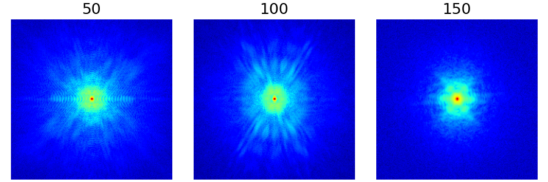
Chauffert’s density#
This is a reproduction of the proposition from [CCW13]. A sampling density is derived from compressed sensing equations to maximize guarantees of exact image recovery for a specified sparse wavelet domain decomposition.
This principle is valid for any linear transform but for convenience it was limited to wavelets as in the original implementation.
chauffert_density = mn.create_chauffert_density(
shape=shape_2d,
wavelet_basis="haar",
nb_wavelet_scales=3,
)
show_density(chauffert_density, figure_size=figure_size)
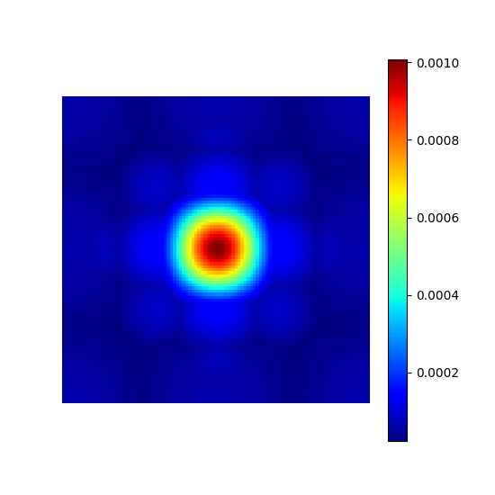
wavelet_basis (str)#
The wavelet basis to use for wavelet decomposition, either
as a built-in wavelet name from the PyWavelets package
or as a custom pywt.Wavelet object.
arguments = ["haar", "rbio2.2", "coif4", "sym8"]
function = lambda x: mn.create_chauffert_density(
shape=shape_2d,
wavelet_basis=x,
nb_wavelet_scales=3,
)
show_densities(
function,
arguments,
subfig_size=subfigure_size,
)
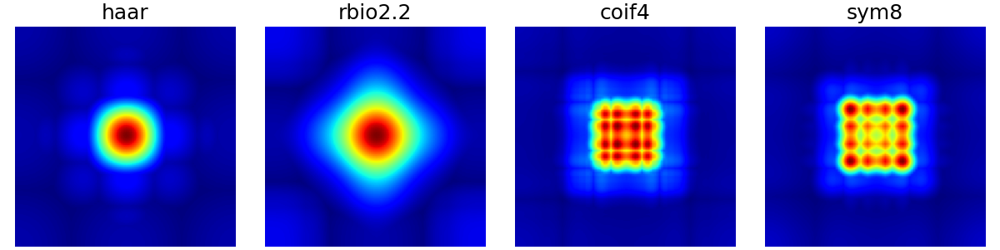
/volatile/github-ci-mind-inria/gpu_runner2/_work/mri-nufft/venv/lib/python3.10/site-packages/pywt/_multilevel.py:43: UserWarning: Level value of 3 is too high: all coefficients will experience boundary effects.
warnings.warn(
nb_wavelet_scales (int)#
The number of wavelet scales to use in decomposition.
arguments = [1, 2, 3, 4]
function = lambda x: mn.create_chauffert_density(
shape=shape_2d,
wavelet_basis="haar",
nb_wavelet_scales=x,
)
show_densities(
function,
arguments,
subfig_size=subfigure_size,
)
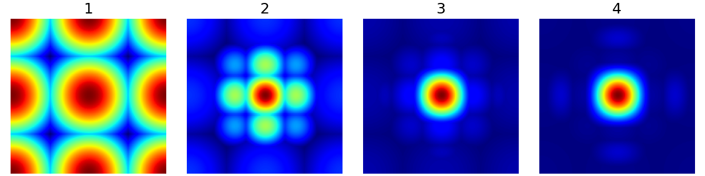
Custom density#
Any density can be defined and later used for sampling and trajectories.
# Linear gradient
density = np.tile(np.linspace(0, 1, shape_2d[1])[:, None], (1, shape_2d[0]))
# Square center
density[
3 * shape_2d[0] // 8 : 5 * shape_2d[0] // 8,
3 * shape_2d[1] // 8 : 5 * shape_2d[1] // 8,
] = 2
# Outer circle
density = np.where(
np.linalg.norm(np.indices(shape_2d) - shape_2d[0] / 2, axis=0) < shape_2d[0] / 2,
density,
0,
)
# Normalization
custom_density = density / np.sum(density)
show_density(custom_density, figure_size=figure_size)
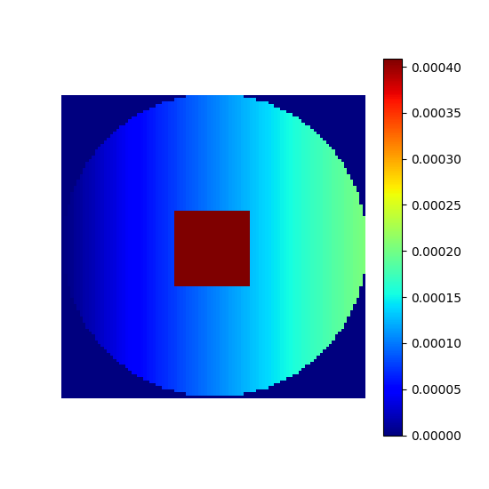
Sampling#
In this section we present random, pseudo-random and algorithm-based sampling methods. The examples are based on a few densities picked from the ones presented above.
densities = {
"Cutoff/Decay": cutoff_density,
"Energy": energy_density,
"Chauffert": chauffert_density,
"Custom": custom_density,
}
arguments = densities.keys()
function = lambda x: densities[x]
show_densities(function, arguments, subfig_size=subfigure_size)
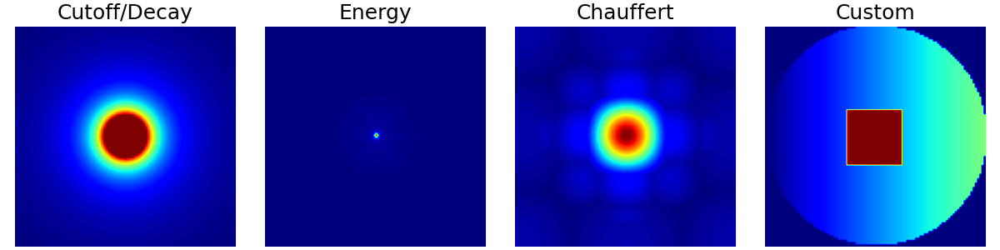
Random sampling#
This sampling simply consists of weighted-random selection from the density grid locations.
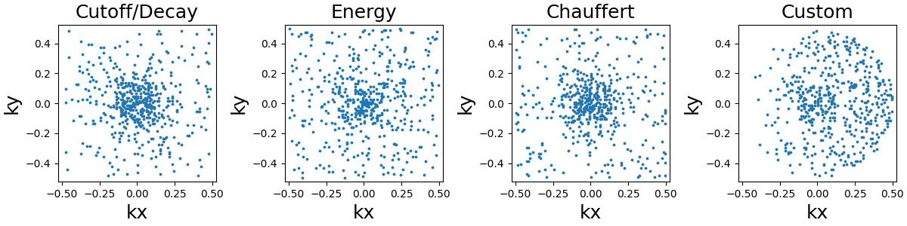
Lloyd’s sampling#
This sampling is based on a Voronoi/Dirichlet tesselation using Lloyd’s
weighted KMeans algorithm. The implementation is based on
sklearn.cluster.KMeans in 2D and sklearn.cluster.BisectingKMeans
in 3D, mostly to reduce computation times in the most demanding cases.
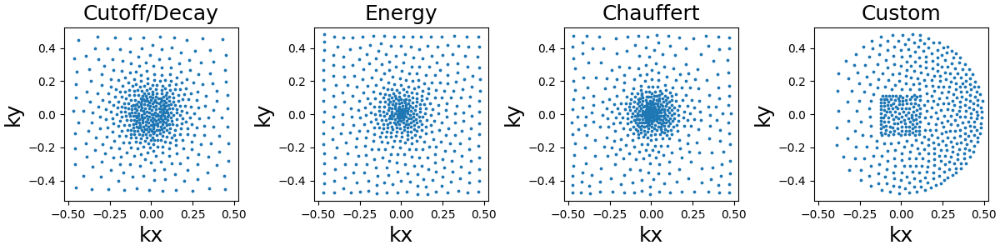
Density-based trajectories#
In this section we present 2D and 3D trajectories based on arbitrary densities, and also sampling for some of them.
Random walks#
This is an adaptation of the proposition from [Cha+14]. It creates a trajectory by walking randomly to neighboring points following a provided sampling density.
This implementation is different from the original proposition: trajectories are continuous with a fixed length instead of making random jumps to other locations, and an option is provided to have pseudo-random walks to improve coverage.
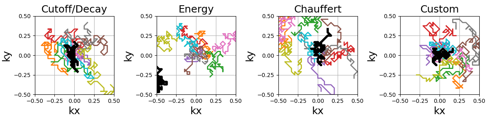
The starting shot positions can be modified to follow Lloyd’s sampling
method rather than the default random approach, resulting in more evenly
spaced shots that still respect the prescribed density.
Additional kwargs can provided to set the arguments in
mrinufft.sample_from_density.
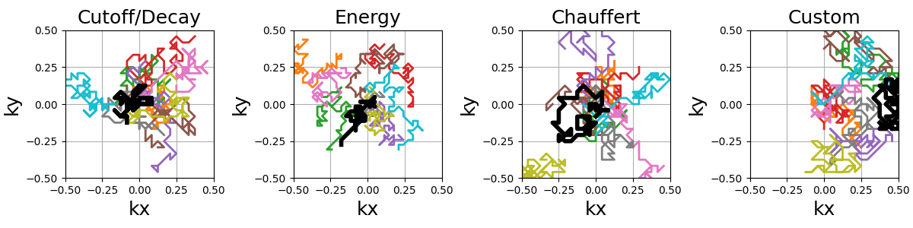
The random paths can be made into a smooth and continuous trajectory by oversampling the shots with cubic splines.
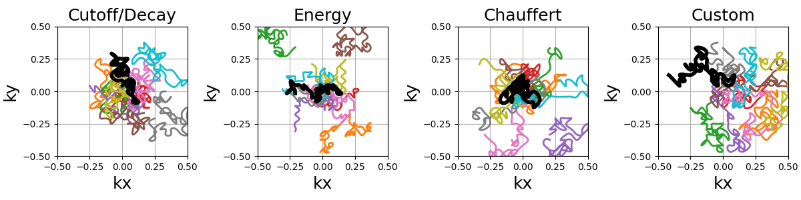
Travelling Salesman#
This is a reproduction of the work from [Cha+14]. The Travelling Salesman Problem (TSP) solution is obtained using the 2-opt method with a complexity in O(n²) in time and memory.
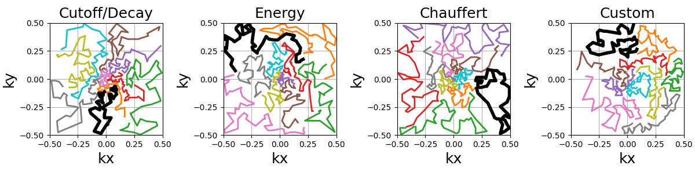
It is possible to customize the sampling method using kwargs
to provide arguments to mrinufft.sample_from_density.
For example, one can use Lloyd’s sampling method to create evenly
spaced point distributions and obtain a more deterministic coverage.
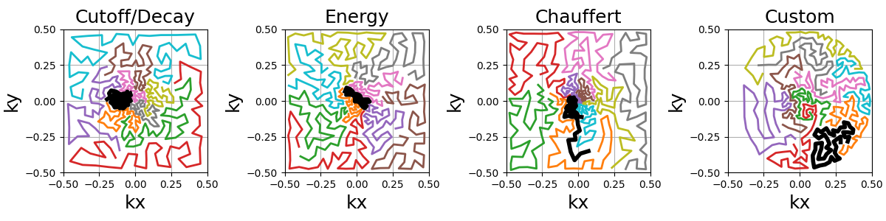
Similarly to random walks, the travelling paths can be smoothed by oversampling the shots with cubic splines. Another use case is to reduce the number of TSP points to reduce the computation load and then oversample up to the desired shot length.
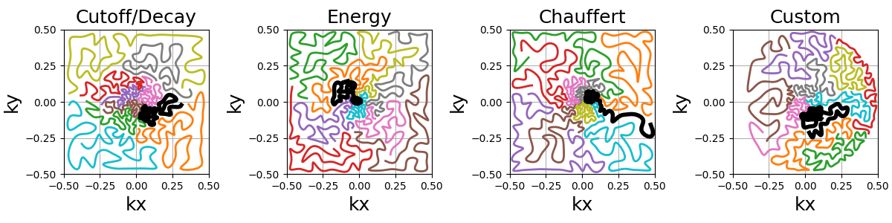
An option is provided to cluster the points before calling the TSP solver,
reducing drastically the computation time.
Clusters are chosen by Cartesian ("x", "y", "z") or spherical
("r", "phi", "theta") coordinate with up to two coordinates.
Then the points can be sorted within each cluster in order to define a general
shot direction as shown below.
arguments = ((None, None, None), ("y", None, "x"), ("phi", None, "r"), ("y", "x", "r"))
function = lambda x: mn.initialize_2D_travelling_salesman(
Nc,
Ns,
density=densities["Custom"],
first_cluster_by=x[0],
second_cluster_by=x[1],
sort_by=x[2],
method="lloyd",
)
show_trajectories(function, arguments, one_shot=one_shot, subfig_size=subfigure_size)
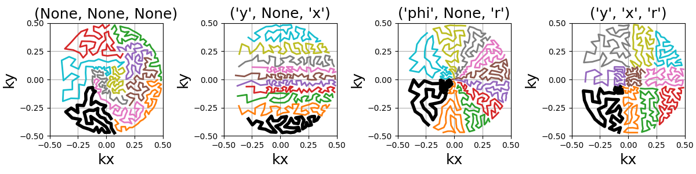
References#
Chauffert, Nicolas, Philippe Ciuciu, and Pierre Weiss. “Variable density compressed sensing in MRI. Theoretical vs heuristic sampling strategies.” In 2013 IEEE 10th International Symposium on Biomedical Imaging, pp. 298-301. IEEE, 2013.
Chauffert, Nicolas, Philippe Ciuciu, Jonas Kahn, and Pierre Weiss. “Variable density sampling with continuous trajectories.” SIAM Journal on Imaging Sciences 7, no. 4 (2014): 1962-1992.
Chaithya, G. R., Pierre Weiss, Guillaume Daval-Frérot, Aurélien Massire, Alexandre Vignaud, and Philippe Ciuciu. “Optimizing full 3D SPARKLING trajectories for high-resolution magnetic resonance imaging.” IEEE Transactions on Medical Imaging 41, no. 8 (2022): 2105-2117.
Total running time of the script: (2 minutes 19.965 seconds)